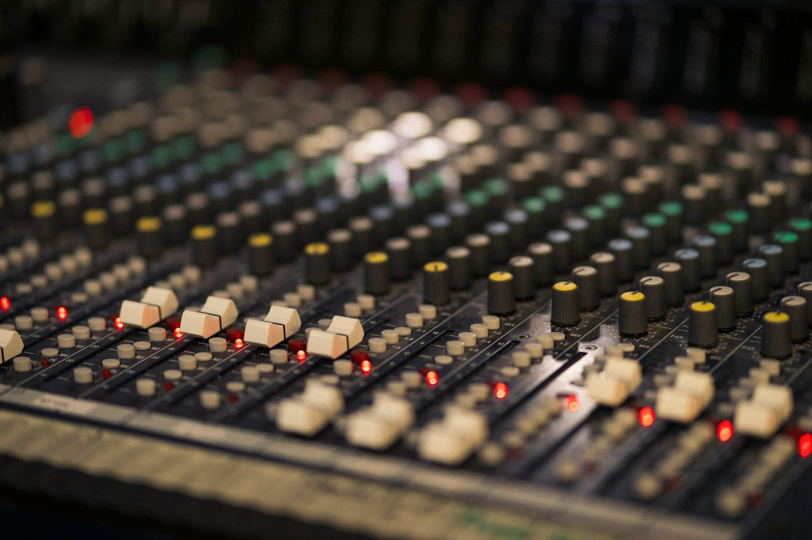
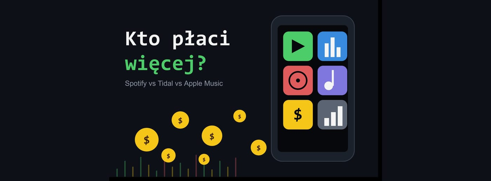

Co to jest DAW? Kompletny przewodnik
Czym jest cyfrowa stacja robocza, z czego się składa, czym różni się od edytora audio i jak wybrać pierwszy program.
CzytajZbiór praktycznych przewodników o produkcji muzyki, miksie i masteringu. Czytaj po kolei albo wybieraj to, czego akurat potrzebujesz - baza rośnie wraz z kolejnymi tematami.

Czym jest cyfrowa stacja robocza, z czego się składa, czym różni się od edytora audio i jak wybrać pierwszy program.
Czytaj
Przegląd głównych DAW-ów - FL Studio, Ableton, Logic, Reaper i inne. Platformy, mocne strony i typowy użytkownik.
Czytaj
Co dzieje się na każdym etapie, w jakiej kolejności następują i jakie popularne mity warto sobie odpuścić.
Czytaj
Co naprawdę jest potrzebne na start, jakie zrobić pierwsze kroki i jakich typowych błędów lepiej unikać.
Czytaj
Jak wybrać mikrofon, ustawić akustykę pokoju domowymi sposobami i nagrać czysty wokal bez drogiego studia.
Czytaj
Czym jest equalizer, jakie ma rodzaje i jak używać go w miksie - od high-pass filtra po kształtowanie barwy instrumentów.
Czytaj
Threshold, ratio, attack, release - poznaj parametry kompresora i dowiedz się, kiedy i jak używać kompresji bez przekompresowania.
Czytaj
Kto ma lepszy dźwięk i kto płaci artystom więcej? Tabele jakości i orientacyjnych stawek per stream dla 8 platform.
Czytaj
Minimalny zestaw do nagrywania i produkcji muzyki w domu — bez przepłacania. Interfejs, mikrofon, słuchawki i akustyka za rozsądne pieniądze.
Czytaj